Wir haben jetzt eine Menge verschiedener Methoden kennengelernt, mit denen wir uns einen Eindruck davon machen können, wie unsere Daten verteilt sind. Um den Begriff der Verteilung an sich haben wir dagegen bis hierher einen Bogen gemacht. Dabei spielt die Art der Verteilung für viele weiterführende Anwendungen eine große Rolle. Manche statistische Verfahren setzen spezifische Verteilungen voraus.
Statistische Verteilungen stellen eine Verbindung her zwischen den empirisch gewonnenen Daten und auf Wahrscheinlichkeit basierenden Aussagen, die wir daraus ableiten wollen. Dabei steht die Frage im Zentrum, mit welcher Wahrscheinlichkeit ein bestimmtes Zufallsereignis eintritt bzw. wie wahrscheinlich es ist, dass eine zufällig gezogene Stichprobe so ausfällt, wie es beobachtet wurde. Können wir annehmen, dass ein Merkmal auf eine bestimmte Weise verteilt ist, können wir eine Prognose abgeben, in welchem Rahmen eine Stichprobe liegen wird. Interessant wird es insbesondere dann, wenn sich nachher zeigt, dass die theoretische Schätzung falsch war und völlig andere Ergebnisse herauskommen. Denn das bedeutet, dass unsere Daten von Faktoren beeinflusst werden, die wir nicht mit eingerechnet haben.
Wir hätten also gerne eine Funktion, die es uns ermöglicht, alle denkbaren Stichproben auf einen Wahrscheinlichkeitswert zwischen 0 und 1 abzubilden. Wenn abzählbar viele Ereignisse eintreten können (z.B. beim Würfeln oder Münzwurf), spricht man von Wahrscheinlichkeitsfunktionen. Bei stetigen Verteilungen (z.B. wenn Zeiträume betrachtet werden) verwendet man den Begriff Dichtefunktion. In beiden Fällen summieren sich alle Funktionswerte zu 1 auf. Eine kumulierte Wahrscheinlichkeits- bzw. Dichtefunktion nennt man Verteilungsfunktion. D.h. bei der Verteilungsfunktion werden die Funktionswerte der Wahrscheinlichkeits summiert bzw. die Dichtefunktion integriert.
Schauen wir uns als Beispiel das Histogramm der Allbus-Einkommensverteilung aus den vorherigen Abschnitten an. Dazu laden wir zunächst die Daten und berechnen einige Parameter:
# Berechnung von arithmetischem und geometrischem Mittel, Median, Modus und # Standardabweichung: mean.einkommen <-mean(allbus_df$Einkommen)geom.einkommen <-geom.mean(allbus_df$Einkommen +43) median.einkommen <-median(allbus_df$Einkommen)modus.einkommen <-get.mode(allbus_df$Einkommen)sd(allbus_df$Einkommen)
[1] 1610.501
Wir plotten zunächst unsere Lageparameter im Histogramm:
ggplot(allbus_df, aes(x = Einkommen)) +geom_histogram(aes(y =after_stat(density)),breaks =seq(-0, 10000, by =500), colour ="black", fill ="gray") +labs(x ="Einkommen", y ="Häufigkeit") +geom_vline(xintercept = mean.einkommen, color ="red", linetype ="dashed", linewidth =1) +geom_vline(xintercept = median.einkommen, color ="blue", linetype ="dashed", linewidth =1) +geom_vline(xintercept =as.numeric(modus.einkommen), color ="green", linetype ="dashed", linewidth =1) +geom_vline(xintercept = geom.einkommen, color ="yellow", linetype ="dashed", linewidth =1)
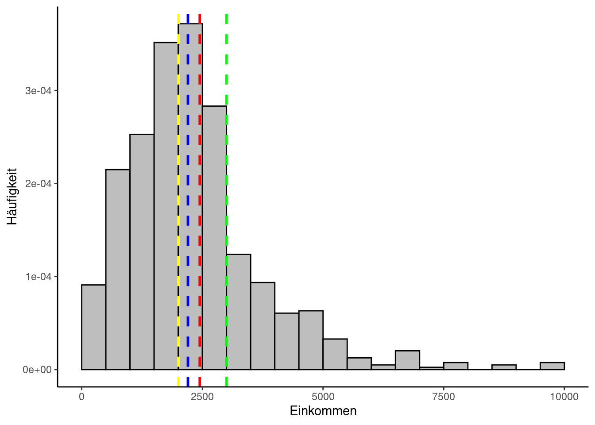
Zunächst einmal sieht man, dass sich die Messwerte in einem bestimmten Bereich häufen und eine zumindest annähernde Glockenform aufweisen. Der höchste Punkt deckt sich in etwa mit dem Mittelwert, hier vor allem dem Median (blau) und dem arithmetischen Mittel (rot), während der Modus (grün) etwas abseits liegt. Sie verteilen sich nicht gleichmäßig, was bei Einkommensdaten auch nicht zu erwarten gewesen wäre. So ganz symmetrisch sieht die Verteilung aber auch nicht aus, sondern wirkt etwas nach links gequetscht. Man nennt das auch “rechtsschief” bzw. “linkssteil”. Ein Indiz hierfür ist auch, dass das arithmetische Mittel größer ist als der Median. Das nach rechts gequetschte Gegenstück hieße “linksschief” bzw. “rechtssteil”. Diese Asymmetrie ist auch dadurch bedingt, dass ein erheblicher Teil der Studienteilnehmenden im Datensatz nicht vorkommt. Leute, die keine Angabe gemacht oder angegeben haben, dass sie über kein eigenes Einkommen verfügen, wurden beim Laden herausgefiltert. Die annähernde Glockenform stimmt jedoch hoffnungsvoll, dass der Datensatz einer Verteilung folgt, die in der Statistik von besonderer Bedeutung ist und die wir im Folgenden genauer betrachten werden: Die Normalverteilung.
0.1 Die Normalverteilung
Diese Verteilung ist auch ihrer charakteristischen Form wegen als Glockenkurve oder nach ihrem maßgeblichen Entdecker Carl Friedrich Gauß als Gauß-Verteilung bekannt. Relativ viele andere Verteilungen lassen sich bei ausreichend großer Stichprobengröße mit der Normalverteilung approximieren. Sie ist symmetrisch und der Mittelwert ist ihr Maximum.
Ca. 68% der Werte liegen innerhalb einer Standardabweichung vom Mittelwert entfernt, ca. 95% innerhalb von zwei Standardabweichungen und ca. 99,7%, also fast alle, innerhalb von drei Standardabweichungen.
0.1.1 Berechnung
Die Dichtefunktion der Normalverteilung wird folgendermaßen berechnet:
\[
f(x,\mu,\sigma) = \frac{1}{\sigma \sqrt{2 \pi}} \cdot e^{-\frac{(x-\mu)^2}{2 \sigma^2}}
\] Dabei ist \(\mu\) der Mittelwert (arithm. Mittel, Median, oder Modus) und \(\sigma\) die Standardabweichung.
Bei einer Normalverteilung mit einem Mittelwert von null und einer Varianz von eins spricht man von einer Standardnormalverteilung:
Normal- aber nicht standardnormal verteilte Werte lassen sich leicht standardisieren, indem man den Mittelwert von ihnen abzieht und das Ergebnis durch die Standardabweichung teilt:
\[
z = \frac{Messwert - Mittelwert}{Standardabweichung} = \frac{x - \mu}{\sigma}
\]\(\mu\) kann dabei das arithmetische Mittel, der Median oder der Modus sein.
Der Vollständigkeit halber sei hier auch noch die Formel der Verteilungsfunktion aufgeschrieben: \[
F(x, \mu, \sigma) = \frac{1}{2} \left[1 + \text{erf} \left (\frac{x - \mu}{\sigma \sqrt{2}} \right) \right]
\]\(erf\) steht für die Gauß’sche Fehlerfunktion.
Da R umfangreiche Funktionalitäten bereitstellt, um diese Verteilungen zu berechnen, ist es an dieser Stelle nicht notwendig, sich diese Formel einzuprägen oder irgendwas damit per Hand zu rechnen. R hat eine ganze Reihe an Verteilungen implementiert und stellt zu jeder davon u.a. vier Funktionen bereit:
die Wahrscheinlichkeits-/Dichtefunktion, beginnend mit dem Buchstaben d,
die Verteilungsfunktion, beginnend mit p,
Quantile, beginnend mit q sowie
Zufallszahlen auf Basis der jeweiligen Verteilung, beginnend mit r.
0.2 Visualisierung
Die folgenden fünf Codebeispiele ergeben Visualisierungen der Normalverteilung bei unterschiedlichen Stichprobengrößen von \(n = 10\) bis \(n = 100000\). Dabei wird jeweils eine Zufallsstichprobe gezogen und die Verteilung der “Messwerte” als Histogramm ausgegeben. Je größer die Stichprobe, desto stärker sollte sich dabei die Verteilung der Zufallswerte der Dichtefunktion der Normalverteilung annähern, die hier rot dargestellt ist. Mittelwert und Standardabweichung sind so gewählt, dass die Standardnormalverteilung herauskommt. Wiederholen Sie die einzelnen Beispiele mehrmals, dann sollte jedesmal eine andere Stichproben-Verteilung herauskommen:
#Zufalls-Stichprobe mit 10 Messwerten:random.data <-rnorm(10, mean =0, sd =1) # Ziehen der Zufallsstichprobe# Histogramm der Verteilung:ggplot(data =data.frame(x = random.data), aes(x)) +geom_histogram(aes(y=..density..), binwidth =0.1, fill ="gray", color ="black", alpha =0.7) +labs(title ="Zufallsstichprobe mit 10 Messwerten", x ="Messwerte", y ="Häufigkeit") +stat_function(fun=dnorm, args=list(mean=0, sd=1), colour="red")
Warning: The dot-dot notation (`..density..`) was deprecated in ggplot2 3.4.0.
ℹ Please use `after_stat(density)` instead.
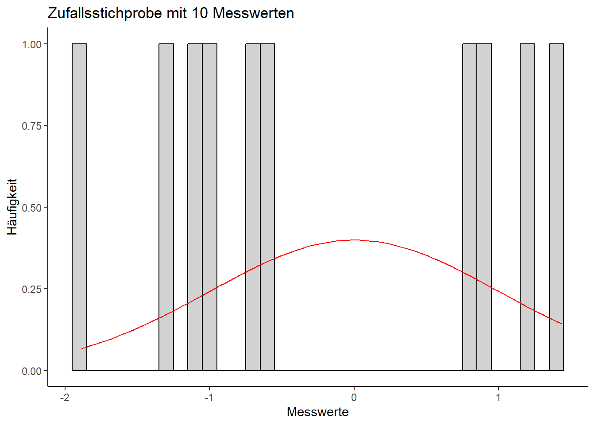
random.data <-rnorm(100, mean =0, sd =1) # Ziehen der Zufallsstichprobe# Histogramm der Verteilung:ggplot(data =data.frame(x = random.data), aes(x)) +geom_histogram(aes(y=..density..), binwidth =0.1, fill ="gray", color ="black", alpha =0.7) +labs(title ="Zufallsstichprobe mit 100 Messwerten", x ="Messwerte", y ="Häufigkeit") +stat_function(fun=dnorm, args=list(mean=0, sd=1), colour="red")
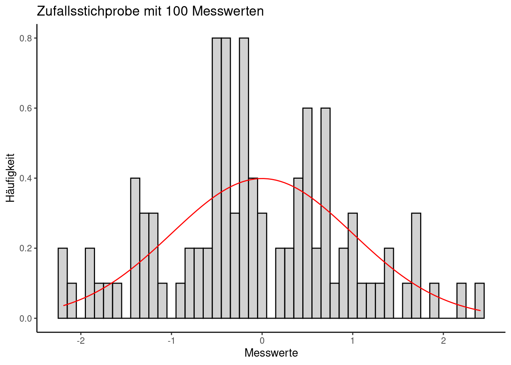
random.data <-rnorm(1000, mean =0, sd =1) # Ziehen der Zufallsstichprobe# Histogramm der Verteilung:ggplot(data =data.frame(x = random.data), aes(x)) +geom_histogram(aes(y=..density..), binwidth =0.1, fill ="gray", color ="black", alpha =0.7) +labs(title ="Zufallsstichprobe mit 1000 Messwerten", x ="Messwerte", y ="Häufigkeit") +stat_function(fun=dnorm, args=list(mean=0, sd=1), colour="red")
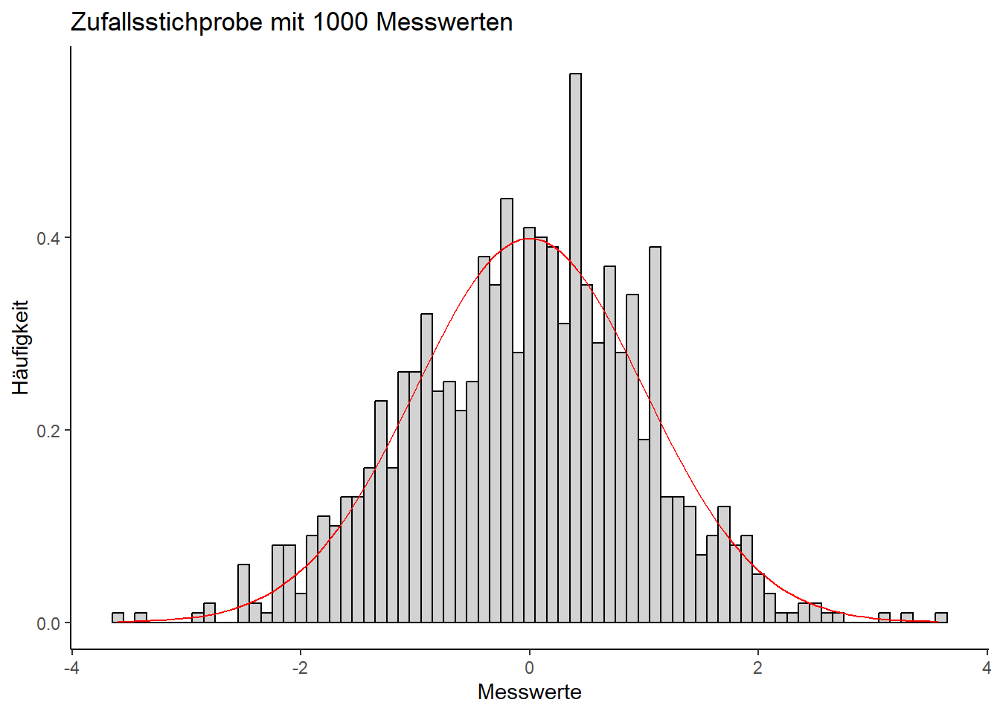
random.data <-rnorm(10000, mean =0, sd =1) # Ziehen der Zufallsstichprobe# Histogramm der Verteilung:ggplot(data =data.frame(x = random.data), aes(x)) +geom_histogram(aes(y=..density..), binwidth =0.1, fill ="gray", color ="black", alpha =0.7) +labs(title ="Zufallsstichprobe mit 10000 Messwerten", x ="Messwerte", y ="Häufigkeit") +stat_function(fun=dnorm, args=list(mean=0, sd=1), colour="red")
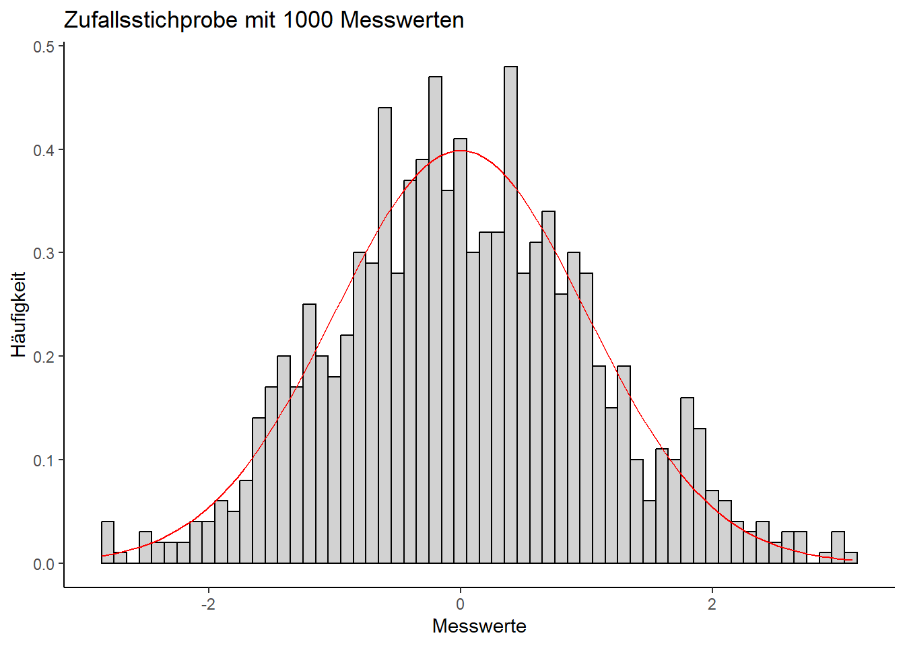
random.data <-rnorm(100000, mean =0, sd =1) # Ziehen der Zufallsstichprobe# Histogramm der Verteilung:ggplot(data =data.frame(x = random.data), aes(x)) +geom_histogram(aes(y=..density..), binwidth =0.1, fill ="gray", color ="black", alpha =0.7) +labs(title ="Zufallsstichprobe mit 100000 Messwerten", x ="Messwerte", y ="Häufigkeit") +stat_function(fun=dnorm, args=list(mean=0, sd=1), colour="red")
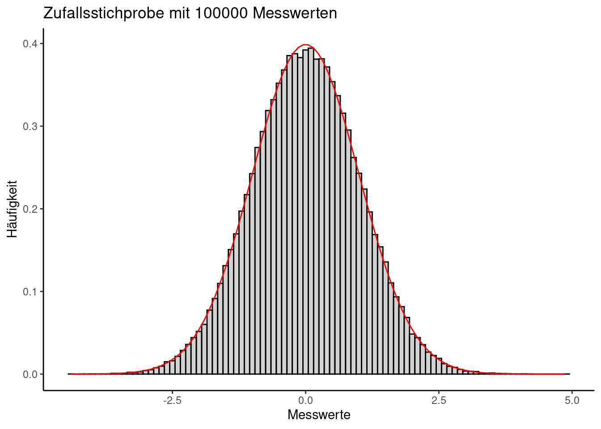
0.3 Interpretation
Aus der Visualisierung der unterschiedlichen Stichprobengrößen sollte ersichtlich geworden sein, warum ausreichend große Stichproben in der Statistik so wichtig sind. Erst ab einer ausreichend großen Anzahl Messwerten kann überhaupt festgestellt werden, ob die Daten der Normalverteilung (oder irgendeiner anderen in diesem Kapitel beschriebenen Verteilung) folgen.
Wenn man weiß, dass ein bestimmtes Merkmal normalverteilt ist, kann man das nutzen, um mit relativ wenig Aufwand Berechnungen anzustellen. Angenommen, für unsere Einkommensdaten träfe das auch zu, dann könnte man z.B. mithilfe der Normalverteilung ausrechnen, wieviel Prozent der Population theoretisch über maximal 1500 Euro Netto-Einkommen im Monat verfügen. Dazu verwenden wir die Verteilungsfunktion der Normalverteilung, da wir an einem kumulierten Wert interessiert sind, nämlich allen möglichen Einkommenswerten bis maximal 1500 Euro. Wir übergeben der Funktion Mittelwert und Standardabweichung unserer Daten sowie die besagte Einkommensobergrenze:
income_mean <-mean(allbus_df$Einkommen) income_sd <-sd(allbus_df$Einkommen)income_median <-median(allbus_df$Einkommen)# Die Verteilungsfunktion der Normalverteilung: "p" + "norm": pnorm(1500, mean=income_mean, sd=income_sd)
[1] 0.2786057
Wir bekommen als Ergebnis ca. 0.278. Das vergleichen wir mit dem 27,8%-Quantil unserer Messwerte:
quantile(allbus_df$Einkommen, probs =c(0.278))
27.8%
1500
Zur Erinnerung: Das 27,8%-Quantil teilt die untersten 27,8% vom Rest der Messwerte. Interessanterweise liegt die Grenze genau bei 1500 Euro, was exakt der Vorhersage entspricht. Die Übereinstimmung wird aber deutlich schwächer, wenn wir das mit dem (100-27,8)%-Quantil vergleichen:
Unsere Messwerte ergeben für das 72,2%-Quantil einen Wert von ca. 2977 Euro. Kalkulieren wir für das selbe Quantil bei der Normalverteilung das zu erwartende Einkommen, werden uns dagegen ca. 3393 Euro angegeben:
qnorm(0.722, mean=income_mean, sd=income_sd)
[1] 3393.598
Die Datenlage weicht folglich um ca. 416 Euro von der theoretischen Annahme ab und fällt deutlich geringer aus. Ein Umstand, der sich auch grafisch widerspiegelt, wenn wir die Normalverteilung in unser Histogramm einzeichnen: Die blaue Kurve basiert auf dem Median als Mittelwert, die rote auf dem arithmetischen Mittel, die gelbe auf dem geometrischen Mittel.
ggplot(allbus_df, aes(x = Einkommen +42)) +geom_histogram(aes(y =..density..),breaks =seq(-0, 10000, by =500), colour ="black", fill ="gray") +labs(x ="Einkommen", y ="Häufigkeit") +geom_vline(xintercept = income_mean, color ="red", linetype ="dashed", linewidth =1) +geom_vline(xintercept = income_median, color ="blue", linetype ="dashed", linewidth =1) +stat_function(fun=dnorm, args=list(mean=income_mean, sd=income_sd), colour="red") +# Einfügen der Normalcerteilung mit arithm. mittelstat_function(fun=dnorm, args=list(mean=income_median, sd=income_sd), colour="blue") +# Einfügen der NV mit Medianstat_function(fun=dnorm, args=list(mean=geom.mean(allbus_df$Einkommen +42), sd=income_sd), colour="yellow") +labs(x ="Einkommen", y ="Häufigkeit")
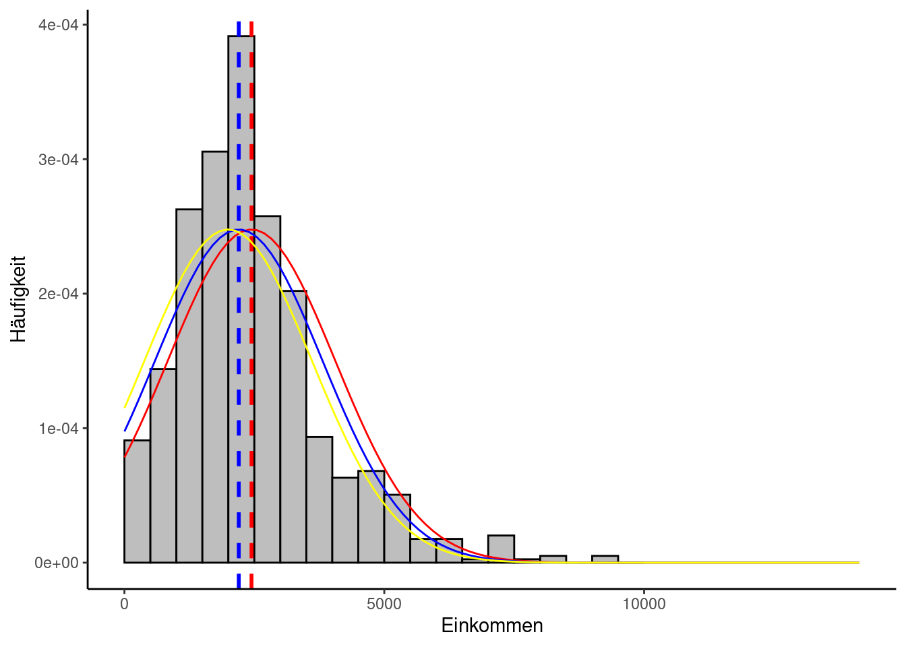
Man sieht darin zweierlei: Zum einen gibt es zwar eine gewisse Übereinstimmung, aber doch auch deutliche Unterschiede zwischen den Messwerten und der Normalverteilung und zum zweiten wirken Median und geometrisches Mittel etwas genauer als das arithmetische Mittel. Hier zeigt sich die stärkere Robustheit des Medians gegenüber Ausreißern.
Eine andere Möglichkeit, die Daten mit visuellen Methoden auf Normalverteilung zu prüfen, ist ein sogenannter Q-Q-Plot. Dabei werden die Quantile der theoretischen Verteilung auf einer Achse aufgetragen und die dazu korrespondierenden Quantile der empirischen Daten auf der anderen. Sind die Daten normalverteilt, sollten die Punkte im Plot alle sehr dicht an einer gemeinsamen Linie liegen. Glücklicherweise gibt es auch für diesen Plot eine Funktion:
#shapiro.test(allbus_messniveau_bsp$di01a)qqnorm(allbus_df$Einkommen) # Erstellen des Q-Q-Plotsqqline(allbus_df$Einkommen) # Einfügen der Linie, auf der die Punkte liegen sollten
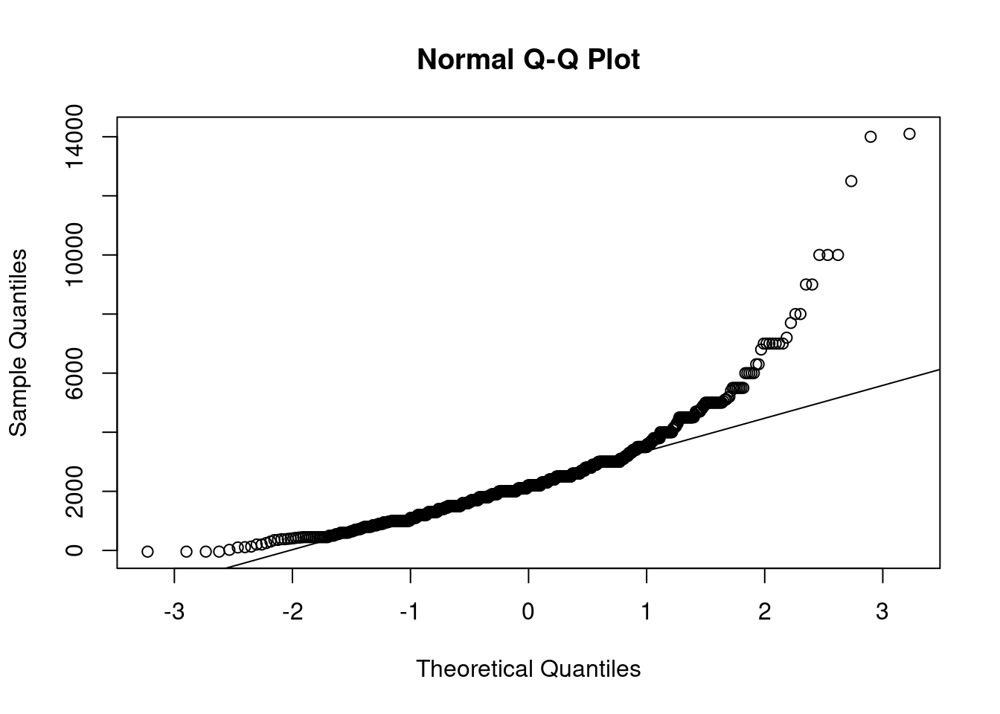
Wie leicht zu sehen ist, weichen die Daten sehr stark von der Linie ab. Der Bereich unterhalb von ca. 3000 Euro Einkommen scheint zumindest teilweise als normalverteilt interpretierbar zu sein, während für höhere Werte die Ergebnisse massiv abweichen. Allerdings muss auch dazugesagt werden, dass ab 5000 Euro aufwärts die Anzahl an Messwerten deutlich abnimmt.
Es gibt Studien, die nahelegen, dass beim Einkommen durch Logarithmierung eine bessere Anpassung an die Normalverteilung erreicht werden kann. Da dies ohnehin eine vielversprechende Methode ist, um die Verteilung empirischer Daten einer Normalverteilung ähnlicher zu machen, probieren wir das einmal aus und werfen dann einen Blick auf den neuen Q-Q-Plot:
log.income =log(allbus_df$Einkommen +42) # 42 wird hier addiert, um negative Messwerte zu vermeiden.qqnorm(log.income)qqline(log.income)
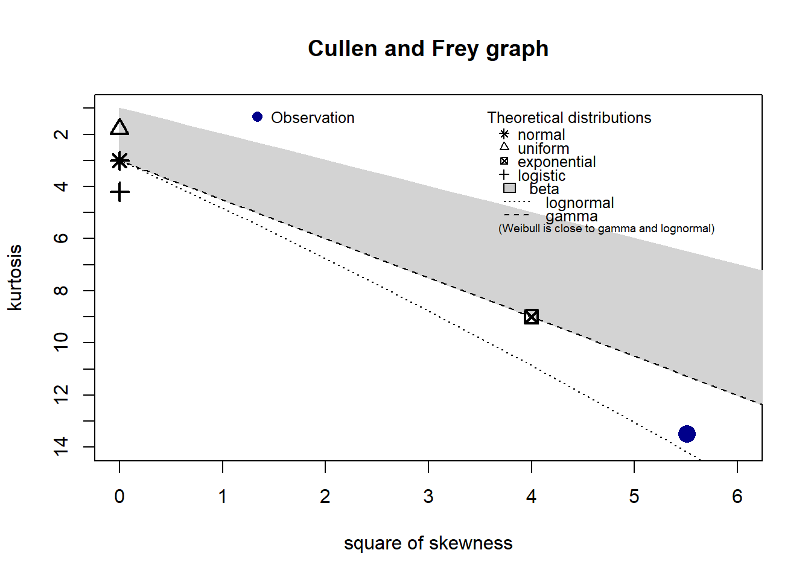
Auch hier sieht man noch immer ein paar deutliche Ausreißer, aber verglichen mit vorher liegen die einzelnen Werte nun sehr viel dichter an der Linie.
Wir belassen es an dieser Stelle dabei, angesichts unserer visuellen Mittel davon auszugehen, dass sich die Einkommensdaten zumindest innerhalb eines bestimmten Bereichs als lognormalverteilt ansehen lassen und damit nicht normalverteilt sind.
1 Was ist schon “normal” - Abweichungen von der Normalverteilung
Wenn die Stichprobe keiner Normalverteilung folgt, hat man mehrere Möglichkeiten: Man kann zum einen versuchen, die Daten zu normalisieren, also so zu transformieren, dass sie einer Normalverteilung ähnlicher werden, man kann eine Verteilung wählen, die besser zu den Daten passt und man kann auf Methoden ausweichen, die keine Normalverteilung voraussetzen.
Das folgende Code-Beispiel zeigt eine R-Funktion, die einem helfen kann, eine passende Verteilung zu finden. Sie orientiert sich an den Eigenschaften Schiefe (Skewness) und Wölbung (Kurtosis). Die Schiefe haben wir bereits kennengelernt. Die Wölbung gibt an, wie flach eine Verteilung ist. Wir haben es mit kontinuierlichen Werten zu tun, also setzen wir “discrete” auf FALSE:
Der blaue Punkt gibt an, wo sich die Verteilung unserer empirischen Daten befindet. Er liegt sehr nahe an der Lognormalverteilung, aber auch die Weibull-Verteilung könnte ein passender Kandidat sein.
1.1 Lognormalverteilung
Wir haben diese Verteilung bereits angesprochen. Für Daten, die einen natürlichen Nullpunkt haben, ist die Lognormalverteilung ein möglicher Kandidat, weil sie nicht symmetrisch ist wie die Normalverteilung. Zur Normalisierung ist sie sehr nützlich. Allerdings sollte man daran denken, dass sie nur mit Werten funktioniert, die größer als Null sind. Man muss also ggf. die Messwerte vorher anpassen.
Schauen wir uns einmal an, wie unsere Einkommensdaten zur Dichtefunktion der Lognormalverteilung passen. Dazu addieren wir zunächst zu jedem Messwert die Zahl 42, damit alle Werte größer Null sind, logarithmieren dann die Messwerte und ermitteln anschließend das arithmetische Mittel und die Standardabweichung:
Dann plotten wir das Ergebnis in einem Histogramm, in das wir die theoretische Dichte der Lognormalverteilung eintragen, die unseren Parametern entspricht:
ggplot(data = allbus_df, aes(x=Einkommen +42)) +geom_histogram(aes(y=..density..), binwidth =500, fill ="gray", color ="black") +labs(title ="Nettoeinkommen und Lognormalverteilung", x ="Messwerte", y ="Dichte") +stat_function(fun=dlnorm, args=list(meanlog=log.mean, sdlog=log.sd), colour="red") #meanlog=log.mean, sdlog=log.sd
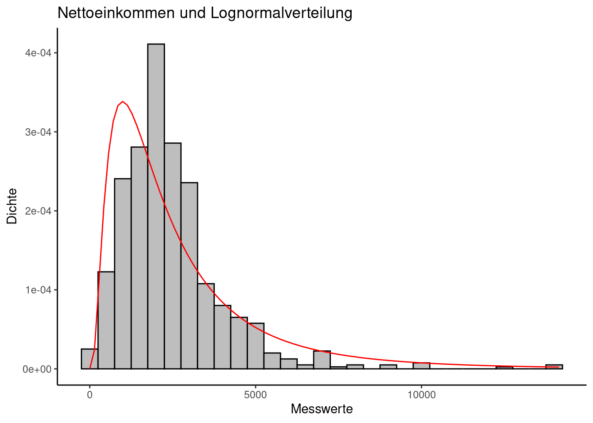
Die theoretische Verteilung wirkt schiefer als die empirische, aber insgesamt scheint die Übereinstimmung auch visuell größer zu sein als mit der Normalverteilung.
1.2 Weibull-Verteilung
Der zweite Kandidat, der sich bei stetigen, asymmetrischen Verteilungen anbieten kann, ist die Weibull-Verteilung. Sie ist sehr vielseitig, bezogen auf die Formen, die sie annehmen kann und wird deshalb oft für die Kalkulation der Lebensdauer von Maschinenteilen u.ä. verwendet. Allerdings kann sie auch bei der Untersuchung von Einkommensungleichheiten von Bedeutung sein.
1.2.1 Berechnung
Diese Verteilung ist abhängig von einem Streuungsparameter \(1 / \lambda\) und dem Formparameter \(k\):
$$ f(x;,k) = ()^{k-1} e{-(x/)k}
$$ Durch den Parameter \(k\) kann man berücksichtigen, wie sich die Häufigkeit, mit der ein bestimmtes Ereignis auftritt, verändert. Wenn \(k = 1\), geht man davon aus, dass sich die Wahrscheinlichkeit, dass ein Ereignis eintritt, kaum verändert. Für \(k < 1\) erwartet man, dass Ereignisse über die Zeit seltener auftreten und für \(k > 1\), dass sie mit der Zeit zunehmen.
1.2.2 Visualisierung
Auf den Netto-Einkommens-Datensatz angewendet, ergibt sich ein Bild, das wie erwartet ähnlich wie die Lognormal-Verteilung wirkt, wenn auch immer noch mit deutlichen Abweichungen.
fit.weibull <-fitdist(allbus_df$Einkommen +43, "weibull")ggplot(data = allbus_df, aes(x=Einkommen +42)) +geom_histogram(aes(y=..density..), binwidth =500, fill ="grey", color ="black") +labs(title ="Netto-Einkommen und Weibull-Verteilung",x ="Messwerte",y ="Dichte" ) +stat_function(fun=dweibull, args=list(scale=fit.weibull$estimate["scale"], shape=fit.weibull$estimate["shape"]), colour="red")
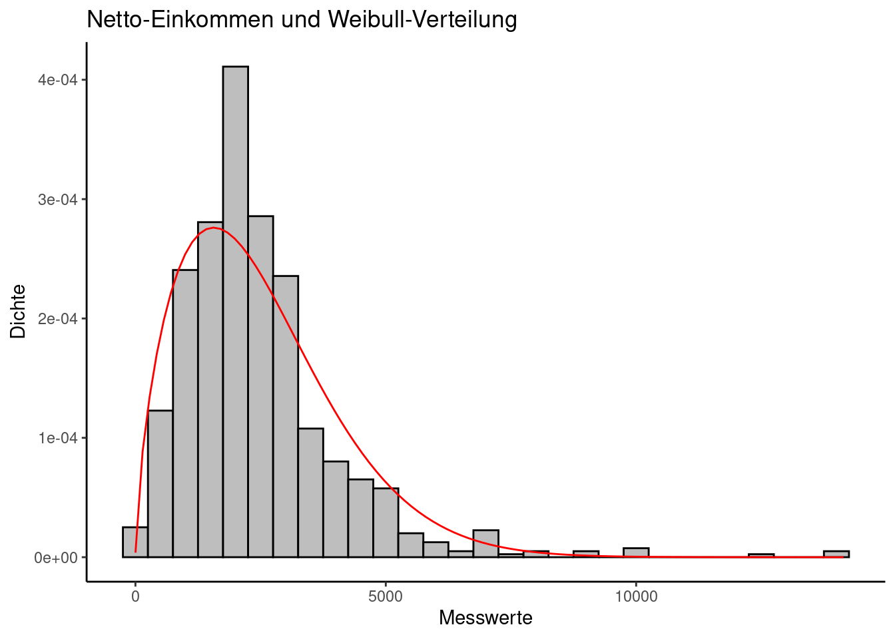
1.3 Weitere Verteilungen
Damit verlassen wir das konkrete Einkommens-Beispiel und die Suche nach Alternativen zur Normalverteilung und schauen uns ein paar weitere Verteilungen an, die je nach Forschungsdesign ebenfalls wichtig sein können.
1.3.1 Binomialverteilung
Diese Verteilung basiert auf Zufallsexperimenten, die genau zwei Versuchsausgänge aufweisen, welche sich gegenseitig ausschließen und konstante Wahrscheinlichkeiten für die beiden Ausgänge haben. Die einzelnen Versuche sollen voneinander unabhängig sein.
Ein bekanntes Beispiel für so ein Zufallsexperiment ist der Münzwurf. Anwendungen in der KMW wären etwa Kaufentscheidungen (Ja/Nein) in der Werbewirkungsforschung oder allgemein Interview-Fragen, auf die es nur Ja/Nein-Antworten gibt.
1.3.1.1 Berechnung und Visualisierung
Bei einer Eintrittswahrscheinlichkeit \(p\) für ein bestimmtes Ereignis berechnet sich die Wahrscheinlichkeit, dass das Ereignis nach \(n\) Wiederholungen \(k\) mal eintritt, mit folgender Formel:
\[
f(k;n,p) = \binom{n}{k} p^k (1-p)^{n-k}
\]
Das folgende Beispiel zeigt, wie man in R die Wahrscheinlichkeit berechnet, bei zehn Münzwürfen genau 7 mal Kopf zu werfen:
n <-10# Festlegen der Gesamtzahl an Würfen kopf <-7# Festlegen der Anzahl, wie oft Kopf geworfen werden soll p_kopf <-0.5# Festlegen der Wahrscheinlichkeit, Kopf zu werfen (hier: 50%)prob <-dbinom(kopf, size=n, prob=p_kopf) prob
[1] 0.1171875
1.3.2 Hypergeometrische Verteilung
Diese Verteilung kann vorliegen, wenn die Bedingung der Unabhängigkeit der einzelnen Versuche nicht einhaltbar ist.
1.3.2.1 Berechnung
Es wird wieder von zwei Ereignissen ausgegangen, die eintreten können. Angenommen, eine Grundgesamtheit setzt sich zusammen aus \(N + M\) Ereignissen, wobei \(M\) und \(N\) sich gegenseitig ausschließen. Aus dieser Grundgesamtheit wird nun eine Stichprobe der Größe \(k\) gezogen. Dann berechnet sich die Wahrscheinlichkeit, dass sich in der Stichprobe \(x\) mal das Ereignis \(M\) eintritt, folgendermaßen: \[
f(x, k, M, N) = \frac{\binom{M}{x} \binom{N}{k-x}}{\binom{N + M}{k}}
\]
Machen wir uns das an einem Beispiel deutlich: In einer Stadt mit ca. 600000 Einwohnern sind ca. 2000 Menschen mit HIV infiziert. Wie groß ist die Wahrscheinlichkeit, dass von 50 Leuten, die man bei einem Ausflug in die Stadt zufällig trifft, kein einziger HIV hat?
n <-600000# Grundgesamtheitm <-2000# Fälle, die eine bestimmte Merkmalsausprägung aufweisenk <-50# Stichprobengrößex <-0prob <-dhyper(x, m, n, k) prob
[1] 0.8467106
Das heißt, die Wahrscheinlichkeit, dass mindestens eine Person, der man begegnet, HIV hat, beträgt ca. \(1 - 0.8467\), also ca. 15,33 Prozent.
1.3.3 Poissonverteilung
Diese Verteilung kann herangezogen werden, wenn es um das durchschnittliche Eintreten bestimmter Ereignisse innerhalb es festen Zeitintervalls geht. Dabei steht \(\lambda\) für die Rate, mit der ein Ereignis durchschnittlich eintritt.
1.3.3.1 Berechnung
Die Poissonverteilung berechnet sich nach folgender Formel: \[
f(x;\lambda) = \frac{\lambda^x e^{-\lambda} }{x!}
\]
Dazu wieder ein Beispiel: Eine Nachrichtenagentur veröffentlicht zu einem bestimmten Thema normalerweise 3 Artikel pro Tag. Wie wahrscheinlich ist es, dass sie an einem Tag 7 Artikel zu demselben Thema veröffentlicht?
x <-7lambda <-3dpois(x, lambda)
[1] 0.02160403
1.3.4 Gleichverteilung
Eine Zufallsvariable ist in einem gegebenen Intervall gleichmäßig verteilt. Diese Verteilung ist besonders zur Erzeugung von Zufallszahlen hilfreich.
1.3.4.1 Berechnung
\[
f(x;min,max) = \begin{cases}
\frac{1}{max-min}, & min \leq x \leq max \\
0, & \text{sonst}
\end{cases}
\]
# Fünf Zufallszahlen, die im voreingestellten Intervall von 0 bis 1 liegen:runif(5)
# Drei Zufallszahlen, die im Intervall von -10 bis 10 liegen:runif(3, min=-10, max=10)
[1] -2.415376 1.154795 3.693968
1.3.5 Exponentialverteilung
Ähnlich wie die Poissonverteilung, allerdings stetig. Sie ist ein Spezialfall der Weibull-Verteilung und wird z.B. bei der Untersuchung von Zeitabständen eingesetzt.
1.3.5.1 Berechnung
Im Gegensatz zur etwas vielseitigeren Weibull-Verteilung hat sie einen Parameter weniger, da \(k\) unveränderlich gleich 1 ist, geht also von weitgehend gleichmäßig auftretenden Ereignissen aus.
\[
f(x;\lambda) = \begin{cases}
\lambda e^{-\lambda x}, & x \geq 0 \\
0, & x < 0
\end{cases}
\] Beispiel:
Eine Nachrichtenagentur berichtet durchschnittlich alle 30 Tage über Proteste und Widerstandsaktionen in einem Land X. Wie wahrscheinlich ist es, dass zwischen den Nachrichten plötzlich nur noch maximal 5 Tage liegen?
da <-30# Durchschnittlicher Abstand in Tagenlambda <-1/ dax <-5prob <-pexp(x, rate=lambda)prob